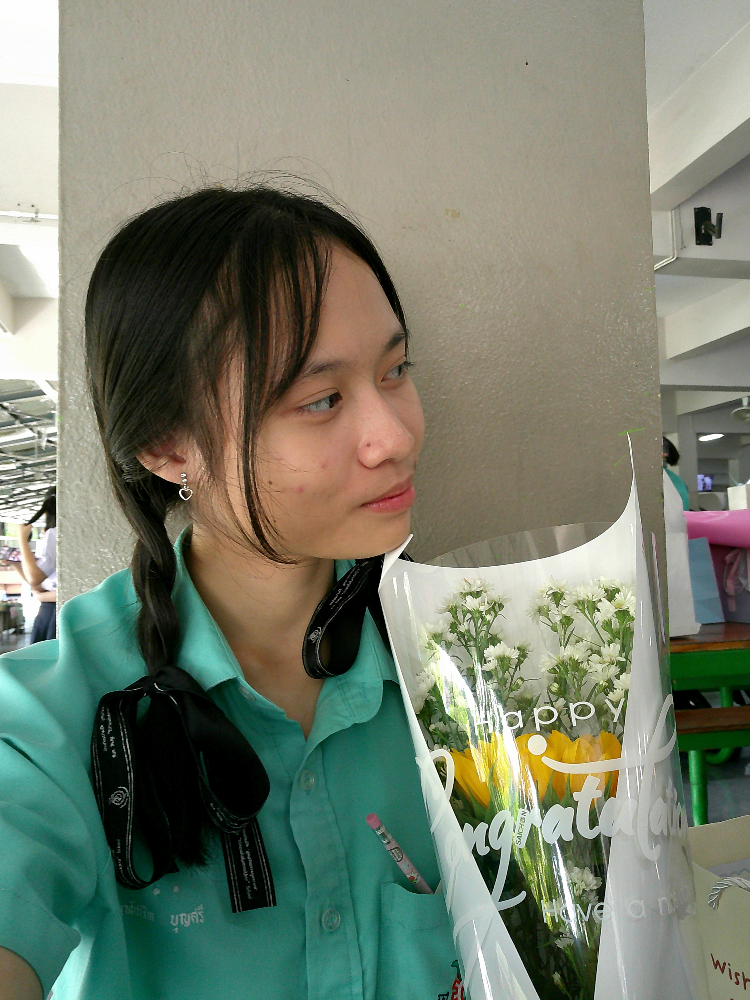

ระดับชั้นมัธยมศึกษาตอนต้น: โรงเรียนบ้านบึง"อุตสาหกรรมนุเคราะห์"
แผนการเรียน: ห้องเรียนพิเศษGifted
ระดับชั้นมัธยมศึกษาตอนปลาย: โรงเรียนบ้านบึง"อุตสาหกรรมนุเคราะห์"
แผนการเรียน: วิทยาศาสตร์-คณิตศาสตร์ (MSEP)
ผลการเรียนเฉลี่ยสะสม: 4.00
ดิฉันมีความตั้งใจที่จะเข้าศึกษาต่อในคณะทันตแพทยศาสตร์ มหาวิทยาลัยจุฬาลงกรณ์ เพราะดิฉันอยากเรียนในสาขาที่ตนเองสนใจ เพื่อพัฒนาความรู้ ความสามารถ และประสบการณ์ให้มากยิ่งขึ้น และนำความรู้ไปพัฒนาต่อยอดในสายอาชีพในอนาคต
